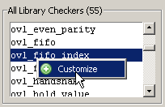

Adding an Assertion Checker
The OVL Checkers
Manager allows you to add any checker in the library to your Customized Checkers
list.
Prerequisites
The OVL Checkers Manager graphic interface must be open and displayed.
Procedure
Add an assertion checker to
the Customized Checkers list with either of these steps.
Right-click any assertion checker from the All Library Checkers list and select Customize from the popup menu.
Figure 1. All Library Checkers Popup MenuOr, select any assertion checker in the All Library Checkers list and click the Customize Library Checker toolbar button.

You can remove checkers from
the Customized Checkers list by selecting a checker in the list
and clicking the Remove CustomizedChecker toolbar
button. 
Results
The selected assertion appears in the Customized Checkers list.